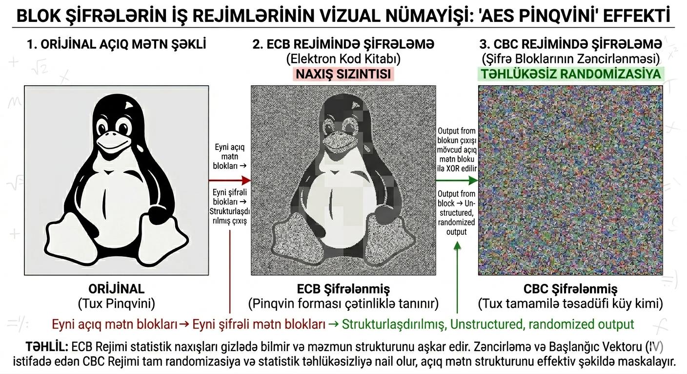

KRİPTOQRAFİYA KURSU
Mühazirə 11: Blok Şifrələrin İş Rejimləri
Ətraflı mühazirə qeydləri
Həftə 11: ECB, CBC, CFB, OFB, CTR, GCM, CCM, XTS
Əvvəlki mühazirələrdə blok şifrələrin özlərini öyrəndik — AES, DES kimi alqoritmlər tək bir bloku (128-bit və ya 64-bit) şifrləyir. Lakin real dünyada mesajlar ixtiyari uzunluqda olur. Blok şifrələri ixtiyari uzunluqlu mesajlara tətbiq etmək üçün iş rejimləri (modes of operation) istifadə olunur .
Bu mühazirədə aşağıdakı iş rejimlərini ətraflı öyrənəcəyik:
ECB (Electronic Codebook) — Elektron Kod Kitabı
CBC (Cipher Block Chaining) — Şifrə Bloklarının Zəncirlənməsi
CFB (Cipher Feedback) — Şifrə Əks-Əlaqəsi
OFB (Output Feedback) — Çıxış Əks-Əlaqəsi
CTR (Counter) — Sayğac Rejimi
GCM (Galois/Counter Mode) — Qalua/Sayğac Rejimi (AEAD)
CCM (Counter with CBC-MAC) — Sayğac + CBC-MAC (AEAD)
XTS (XEX-based Tweaked CodeBook) — Disk şifrələməsi üçün
Niyə iş rejimləri lazımdır? Blok şifrələr tək bir bloku şifrləyir. Uzun mesajlar üçün:
Mesaj bloklara bölünməlidir;
Hər blok şifrlənməlidir;
Eyni açıq mətn blokları eyni şifrəli mətn blokları verməməlidir (Naxış gizlədilməsi (Pattern Hiding));
Şifrləmə eyni açarla eyni mesajda təhlükəsiz olmalıdır.
İş rejimləri bu problemləri həll edir .
Blok şifrələr (məsələn, AES) sabit blok ölçüsü (\(L=16\) bayt) ilə işləyir. Lakin real mesajların uzunluğu həmişə blok ölçüsünün tam mislləri olmur. Bu halda sonuncu bloku tamamlamaq üçün Doldurma metodlarından istifadə olunur .
Ən geniş yayılmış doldurma üsulu PKCS#7-dir. Bu metodda çatışmayan baytların sayı qədər bayt əlavə edilir və hər bir əlavə edilən baytın dəyəri məhz həmin saya bərabər olur.
PKCS#7 Hesablanması Əgər blokun dolması üçün \(N\) sayda bayt çatışmırsa, blokun sonuna \(N\) dəfə \(0xN\) dəyəri əlavə edilir.
1 bayt çatışmırsa: ... | 01
3 bayt çatışmırsa: ... | 03 03 03
Blok tamdırsa: Bu halda tam bir blok (\(16\) bayt) əlavə edilir
(10 10 ... 10), beləliklə deşifrələmə zamanı sonun harada
bitdiyi qarışdırılmır.
Doldurmanın düzgün tətbiqi həm də təhlükəsizlik məsələsidir.
Doldurma Orakl Hücumu Əgər server deşifrələmə zamanı doldurmanın səhv olub-olmaması barədə xəta mesajı qaytararsa (məsələn, "Invalid Padding"), hücumçu bu məlumatdan istifadə edərək şifrəli mətni blok-blok deşifrləyə bilər . Bu səbəbdən müasir sistemlərdə doldurmanı yoxlamazdan əvvəl mesajın tamlığı (MAC vasitəsilə) yoxlanmalıdır.
ECB ən sadə iş rejimidir. Mesaj bloklara bölünür və hər blok digərlərindən tamamilə müstəqil şəkildə şifrlənir .
ECB Şifrləmə Şifrləmə tənliyi: \[C_i = E_K(P_i)\] Deşifrələmə tənliyi: \[P_i = D_K(C_i)\] burada \(P_i\) açıq mətn bloku, \(C_i\) şifrəli mətn bloku, \(E_K\) isə açarla idarə olunan blok şifrə funksiyasıdır.
Sadəlik: Rejimin tətbiqi və başa düşülməsi çox asandır.
Paralelləşdirmə: Hər bir blok müstəqil olduğu üçün şifrləmə və deşifrələmə eyni anda bir neçə prosessor nüvəsində (multithreading) həyata keçirilə bilər.
Təsadüfi Giriş (Təsadüfi müraciət): Mesajın ortasındakı bir bloku oxumaq üçün əvvəlki blokları deşifrələməyə ehtiyac yoxdur.
ECB-nin Əsas Zəifliyi Eyni açıq mətn blokları eyni açarla həmişə eyni şifrəli mətn bloklarını yaradır. Bu, şifrəli mətndə daxili statistik quruluşun (pattern) qalmasına və məlumat sızmasına səbəb olur .
ECB Nümunəsi — "Linux" Pinqvini Linux maskotu olan Tux şəkli ECB rejimində şifrləndikdə, rəng dəyərləri dəyişsə də, eyni rəngli piksellər eyni şifrəli dəyərləri verdiyi üçün orijinal şəklin konturları aydın şəkildə görünməyə davam edir .

ECB Nə Vaxt İstifadə Oluna Bilər? ECB müasir təhlükəsizlik tələblərinə cavab vermir və ümumiyyətlə istifadəsi tövsiyə edilmir . Yalnız tamamilə təsadüfi paylanmış kiçik məlumatların (məsələn, digər şifrələmə açarlarının) şifrlənməsi üçün tətbiq oluna bilər.
CBC rejimində hər bir açıq mətn bloku şifrlənmədən əvvəl əvvəlki şifrəli mətn bloku ilə XOR əməliyyatına məruz qalır . Bu zəncirvari struktur eyni açıq mətn bloklarının fərqli şifrəli bloklara çevrilməsini təmin edərək naxış sızıntısını (pattern leakage) aradan qaldırır.
CBC Riyazi Mexanizmi Şifrləmə: \[C_i = E_K(P_i \oplus C_{i-1})\] Burada \(C_0 = IV\) (İlkin Vektor).
Deşifrələmə: \[P_i = D_K(C_i) \oplus C_{i-1}\] Burada \(P_1 = D_K(C_1) \oplus IV\).
IV şifrləmənin deterministik olmamasını təmin edir. Əsas tələblər:
Unikallıq: Eyni açarla eyni IV heç vaxt təkrar istifadə edilməməlidir.
Təsadüfilik: IV təxmin edilə bilməz olmalıdır. Proqnozlaşdırıla bilən IV-lər (məsələn, ardıcıl saylar) chosen-plaintext hücumlarına yol açır.
IV Təkrarı və Hücumlar IV-nin təkrarı və ya zəif seçilməsi nəticəsində hücumçu mesajların prefikslərinin eyni olub-olmadığını öyrənə bilər. CBC rejimi həmçinin Doldurma Oraklı hücumuna qarşı həssasdır , burada hücumçu dodlurma xətalarından istifadə edərək mesajı bayt-bayt bərpa edir.
CBC blok-əsaslı rejim olduğu üçün mesajın uzunluğu blok ölçüsünün (\(L=16\) bayt) misli olmalıdır.
PKCS#7: Ən çox istifadə olunan doldurma metodudur. Çatışmayan \(N\) bayt qədər \(N\) dəyəri əlavə edilir.
Tam blok halı: Əgər mesaj tamdırsa, əlavə bir
tam blok (16 baytlıq 0x10) əlavə edilir ki, deşifrələmə
zamanı qarışıqlıq yaranmasın.
Şifrləmə: Paralelləşdirilə bilməz (\(C_i\) üçün \(C_{i-1}\) lazımdır).
Deşifrələmə: Tamamilə paralelləşdirilə bilər, çünki bütün \(C\) blokları öncədən məlumdur.
Xəta Yayılması: \(C_i\) blokundakı 1 bitlik xəta \(P_i\)-ni tamamilə korlayır, lakin \(P_{i+1}\)-də yalnız müvafiq 1 bitlik xətaya səbəb olur (XOR xüsusiyyəti).
CBC Hesablanması (8-bit Sadələşmiş) Açar \(K\) və \(IV = 0x12\) verilib. \(P_1 = 0x53\) (’S’) şifrləyək:
XOR mərhələsi: \(P_1 \oplus IV = 0x53 \oplus 0x12 = 0x41\)
Şifrləmə: \(C_1 = E_K(0x41)\)
Növbəti blok üçün \(C_1\) yeni "zəncir" halqası olur.
CFB rejimi blok şifrəni effektiv şəkildə axın şifrəsinə (stream cipher) çevirir. Bu rejimdə açıq mətn birbaşa blok şifrə alqoritminə (məs. AES) daxil olmur. Bunun əvəzinə, blok şifrə unikal bir açar axını (keystream) yaradır və bu axın açıq mətnlə XOR edilir .
CFB Riyazi Mexanizmi CFB rejimi \(s\)-bitlik seqmentlərlə işləyir. Hər addımda \(b\)-bitlik sürüşmə reqistri (\(I\)) istifadə olunur: \[\begin{align*} I_1 &= IV \\ O_j &= E_K(I_j) \\ C_j &= P_j \oplus \text{MSB}_s(O_j) \\ I_{j+1} &= \text{LSB}_{b-s}(I_j) \parallel C_j \end{align*}\] Burada \(\text{MSB}_s\) çıxışın ilk \(s\) bitini, \(\text{LSB}_{b-s}\) isə sürüşmə reqistrinin son \(b-s\) bitini ifadə edir. \(\parallel\) işarəsi isə bitlərin zəncirlənməsini (concatenation) göstərir.
CFB-nin ən maraqlı cəhəti odur ki, deşifrələmə zamanı da blok şifrənin şifrləmə (Encryption) funksiyası istifadə olunur: \[P_j = C_j \oplus \text{MSB}_s(E_K(I_j))\] Bunun səbəbi şifrləmə zamanı istifadə olunan "açar axınını" eynilə bərpa etmək zərurətidir.
Doldurma (Padding) Tələb Etmir: Mesajın uzunluğu blok ölçüsünün misli olmaq məcburiyyətində deyil. İxtiyari bit uzunluğunda mesajlar şifrlənə bilər.
Sinxronizasiya: CFB-nin özünübərpa xüsusiyyəti var. Əgər ötürmə zamanı bəzi bitlər itərsə və ya əlavə olunarsa, sürüşmə reqistri tam dolduqdan sonra sistem yenidən düzgün deşifrələməyə başlayır.
Paralelləşdirmə: Şifrləmə ardıcıl (sequential) aparılmalıdır, lakin deşifrələmə paralelləşdirilə bilər (çünki \(C_j\) blokları artıq əlimizdədir).
CFB rejimi \(s\) parametrindən asılı olaraq çevikdir:
| Rejim | Tətbiq Sahəsi |
|---|---|
| CFB-1 | Bit səviyyəli ötürmə (hər bit üçün bir AES əməliyyatı - çox yavaş) |
| CFB-8 | Simvol səviyyəli ötürmə (Terminal emulyasiyaları) |
| CFB-128 | Tam blok səviyyəli (AES üçün maksimum səmərəlilik) |
CFB və Xəta Yayılması Şifrəli mətndəki (\(C_j\)) bir bitlik xəta həm cari \(P_j\) blokunu korlayır, həm də sürüşmə reqistri vasitəsilə növbəti bloklara təsir edir. Sürüşmə reqistrindən həmin xətalı bit çıxdıqdan sonra deşifrələmə avtomatik düzəlir .
OFB rejimi də blok şifrəni axın şifrəsinə çevirir. CFB-dən əsas fərqi ondan ibarətdir ki, burada geri-əlaqə (feedback) şifrəli mətndən deyil, birbaşa blok şifrənin öz çıxışından (output) götürülür . Bu o deməkdir ki, açar axını (keystream) açıq mətndən tamamilə müstəqil şəkildə formalaşır.
OFB Şifrləmə və Deşifrələmə Şifrləmə prosesi unikal bir açar axını (\(O_i\)) yaradılmasına əsaslanır: \[\begin{align*} O_0 &= IV \\ O_i &= E_K(O_{i-1}) \quad (\text{Açar axını}) \\ C_i &= P_i \oplus O_i \quad (\text{Şifrləmə}) \\ P_i &= C_i \oplus O_i \quad (\text{Deşifrələmə}) \end{align*}\] Burada \(E_K\) yalnız şifrləmə rejimində istifadə olunur (həm şifrləmə, həm də deşifrələmə zamanı).
Axın Şifrəsi Mexanizmi: Məlumat blok ölçüsündən asılı olmayaraq bit-bit və ya bayt-bayt şifrlənə bilər, buna görə də padding doldurma (padding) tələb olunmur.
Əvvəlcədən Hesablama (Offline Processing): Açar axını (\(O_i\)) açıq mətn hələ hazır olmadan belə əvvəlcədən hesablana bilər. Bu, real zamanlı sistemlərdə yüksək sürət təmin edir.
Xəta Yayılmasının Olmaması: Şifrəli mətndəki (\(C_i\)) bir bitlik xəta deşifrələmə zamanı yalnız müvafiq açıq mətn bitini (\(P_i\)) korlayır. Bu, səs və video ötürülməsi kimi xətalara qarşı dözümlü sistemlər üçün idealdır.
Sinxronizasiya Həssaslığı: Əgər ötürmə zamanı bir bit itərsə və ya əlavə olunarsa, bütün növbəti bloklar yanlış deşifrlənəcək (sinxronizasiya itir).
Açar Axınının Təkrarı Təhlükəsi Əgər eyni \((K, IV)\) cütlüyü iki fərqli mesaj üçün istifadə olunarsa, eyni açar axını yaranacaq. Hücumçu iki şifrəli mətni XOR edərək açıq mətnlər haqqında məlumat əldə edə bilər (\(C_1 \oplus C_2 = P_1 \oplus P_2\)) .
| Xüsusiyyət | CFB | OFB |
|---|---|---|
| Geri-əlaqə mənbəyi | Şifrəli mətn (\(C_i\)) | Çıxış (\(O_i\)) |
| Xəta yayılması | Cari blok + Növbəti blok | Yalnız cari bit |
| Özünü-sinxronizasiya | Məhdud (Bəli) | Xeyr |
| Offline hesablama | Mümkün deyil | Mümkündür |
| Tip | Blok şifrə əsaslı axın | Təmiz axın şifrəsi |
CTR rejimi blok şifrəni yüksək performanslı axın şifrəsinə çevirir. Bu rejimdə şifrləmə alqoritmi birbaşa açıq mətn bloklarını deyil, unikal bir sayğac (counter) dəyərlərini şifrləyir. Yaranan açar axını (keystream) daha sonra açıq mətnlə XOR edilir .
CTR Riyazi Mexanizmi Hər bir blok üçün müstəqil olaraq aşağıdakı əməliyyat yerinə yetirilir: \[\begin{align*} O_i &= E_K(\text{CTR}_i) \quad (\text{Açar axını}) \\ C_i &= P_i \oplus O_i \quad (\text{Şifrləmə}) \\ P_i &= C_i \oplus O_i \quad (\text{Deşifrələmə}) \end{align*}\] Burada \(\text{CTR}_i\) unikal blokdur. Adətən \(\text{CTR}_i = \text{Nonce} \parallel \text{Sayğac}\) formatında təşkil olunur.
CTR rejimi OFB-nin bütün üstünlüklərini saxlayır, lakin onun əsas çatışmazlığını (paralelləşdirmə problemini) həll edir:
Tam Paralelləşdirmə: Hər bir blokun şifrlənməsi və deşifrlənməsi digərindən tamamilə müstəqildir. Bu, müasir çoxnüvəli prosessorlarda maksimum sürət deməkdir.
Təsadüfi Müraciət (Random Access): Böyük bir faylın ortasındakı məlumatı deşifrələmək üçün əvvəlki blokları deşifrələməyə ehtiyac yoxdur.
Doldurma (Padding) Tələb Etmir: Mesajın uzunluğu blok ölçüsünə uyğun gəlməyə bilər, çünki o, axın şifrəsi kimi davranır.
Aparat Səviyyəsində Səmərəlilik: Şifrləmə və deşifrələmə eyni \(E_K\) dövrəsindən istifadə edir ki, bu da çiplərin sahəsinə qənaət edir.
Sayğac bloku adətən 128 bit (AES üçün) olur və iki hissəyə bölünür:
Nonce (64-bit): Hər mesaj üçün unikal olan təsadüfi ədəd.
Counter (64-bit): Hər blokda bir vahid artırılan hissə.
Sayğacın Təkrarı (Catastrophic Failure) Əgər eyni \((K, \text{CTR})\) cütlüyü fərqli mesajlar üçün təkrar istifadə olunarsa (məsələn, sistem yenidən başladıqda eyni sayğacdan başlayarsa), iki şifrəli mətnin XOR-u açıq mətnlərin XOR-una bərabər olur (\(C_1 \oplus C_2 = P_1 \oplus P_2\)). Bu, İki dəfə istifadə olunan blok hücumuna yol açır.
Müasir CPU-larda mövcud olan AES-NI (Advanced Encryption Standard New Instructions) təlimatları eyni anda bir neçə AES əməliyyatını emal edə bilir. CTR rejimi bloklar arasında asılılıq yaratmadığı üçün AES-NI ilə birlikdə istifadə edildikdə saniyədə bir neçə qiqabit (Gbps) sürətlə şifrləmə təmin edir .
AEAD rejimləri müasir kriptoqrafiyanın "qızıl standartı" hesab olunur, çünki onlar eyni zamanda həm məxfiliyi (şifrləmə), həm də tamlığı və autentifikasiyanı (etiket) təmin edir .
AEAD-in Komponentləri AEAD rejimi üç giriş məlumatı əsasında işləyir:
Açıq mətn (P): Şifrlənəcək əsas gizli məlumat.
Əlavə Məlumat - Associated Data (AD): Şifrlənməyən (məsələn, IP paket başlığı), lakin tamlığı qorunmalı olan məlumatlar.
Açar (K) və Nonce (N): Unikallığı təmin edən parametrlər.
Çıxış: Şifrəli mətn (C) + Autentifikasiya etiketi (T).
GCM hazırda müasir kriptoqrafiyanın "qızıl standartı" və dünyada ən çox istifadə olunan AEAD rejimidir. O, məlumatın məxfiliyini təmin etmək üçün CTR rejimini, tamlığını və həqiqiliyini yoxlamaq üçün isə Qalua meydanında (\(GF(2^{128})\)) hesablanan GHASH funksiyasını birləşdirir .
GCM-in İş Prinsipi: Şifrləmə və Autentifikasiya GCM eyni vaxtda iki növ məlumatı emal edir:
Açıq mətn - Plain text (P): Həm şifrlənir, həm də autentifikasiya olunur (məsələn, mesajın mətni).
Əlaqəli data - Associated Data (AD): Şifrlənmir (açıq qalır), lakin autentifikasiya olunur. Bu, şəbəkə protokollarında (məs. IP başlıqları) IP ünvanların və ya portların yolda dəyişdirilməsinin qarşısını almaq üçün kritikdir.
Effektivlik: GCM tam paralelləşdirilə bilən bir struktura malikdir. Həm CTR şifrləməsi, həm də GHASH hesabatı bir-birindən asılı olmadan aparıla bildiyi üçün çox yüksək ötürmə sürəti (Gbps+) təmin edir.
Təhlükəsizlik: Əgər haker şifrəli mətni (C) və ya açıq qalan AD hissəsini bircə bit belə dəyişdirsə, hesablanan autentifikasiya etiketi (\(T\)) orijinal etiketlə uyğun gəlməyəcək və sistem paketi saxta hesab edərək dərhal rədd edəcək.
GCM-in Real Dünyada Tətbiqi Müasir internet təhlükəsizliyi demək olar ki, tamamilə GCM üzərində qurulub:
TLS 1.3: HTTPS bağlantılarında ən təhlükəsiz və
sürətli seçim olaraq AES_128_GCM istifadə edir.
VPN və IPsec: Şəbəkə paketlərinin başlıqlarını (AD olaraq) qorumaq və məzmununu şifrləmək üçün ən ideal rejimdir.
Kritik Qeyd: Nonce Təkrarı GCM rejimində eyni açar ilə eyni Nonce-un (IV) təkrar istifadəsi fəlakətlə nəticələnir. Bu halda hücumçu həm açar axınını, həm də GHASH autentifikasiya açarını əldə edə bilər ki, bu da sistemin tamamilə çökməsi deməkdir.
CCM rejimi adından da göründüyü kimi, məxfiliyi təmin etmək üçün CTR rejimini, tamlığı yoxlamaq üçün isə CBC-MAC metodunu birləşdirir . GCM-dən əsas fərqi, onun "iki-keçidli" (two-pass) bir alqoritm olmasıdır.
Üstünlüyü: Riyazi strukturu GCM-ə nisbətən daha sadədir və mürəkkəb Qalua meydanı hesablamaları tələb etmir. Həmçinin, heç bir patent məhdudiyyəti olmadan sərbəst istifadə edilə bilər.
Çatışmazlığı: Şifrləmə başlamazdan əvvəl mesajın tam uzunluğu məlum olmalıdır (bu, axınlı videolar üçün problem yarada bilər). Bundan əlavə, ardıcıl (sequential) işlədiyi üçün GCM qədər sürətli deyil.
Tətbiq sahələri: Hesablama gücü məhdud olan cihazlarda və simsiz şəbəkə standartlarında geniş istifadə olunur:
IEEE 802.11i (WPA2): Wi-Fi təhlükəsizliyinin əsasını təşkil edir.
Bluetooth: Məlumatların qorunması üçün istifadə edilir.
ZigBee (IoT): Enerji qənaətli sensor şəbəkələrində tətbiq olunur.
CCM vs GCM Seçimi Əgər sisteminizdə aparat sürətləndiricisi (məsələn, Intel AES-NI) varsa və yüksək sürət lazımdırsa, GCM seçilməlidir. Əgər resurslar məhduddursa və ya patentlərdən qaçmaq istəyirsinizsə, CCM daha etibarlı seçimdir.
GCM-in (və ümumiyyətlə CTR əsaslı rejimlərin) ən böyük zəifliyi eyni Nonce-un təkrarlanmasıdır (Nonce-misuse). Bu baş verdikdə açar axını (keystream) açılır və bütün məxfilik itir. RFC 8452 ilə təsvir olunan GCM-SIV (Sintetik başlanğıc qiyməti vektoru - Synthetic Initialization Vector) bu problemi riyazi üsulla həll edir.
Dayanıqlıq: Nonce təkrarlansa belə, hücumçu açar axınını və ya GHASH açarını bərpa edə bilmir. Ən pis halda hücumçu yalnız iki eyni mesajın eyni olduğunu öyrənə bilər (deterministik şifrləmə kimi), lakin mesajın içini oxuya bilməz.
İş prinsipi: SIV (Sintetik IV) birbaşa mesajın özündən və nonce-dan törədilir. Yəni mesaj dəyişdikdə IV də avtomatik dəyişir, bu da sistemi proqramlaşdırma səhvlərinə qarşı müstəsna dərəcədə dayanıqlı edir.
Bu iki AEAD rejimi müasir şəbəkə protokollarının sütunlarıdır, lakin fərqli ehtiyaclara xidmət edirlər.
| Xüsusiyyət | GCM (Qalua/Sayğac) | CCM (Sayğac və CBC-MAC) |
|---|---|---|
| Sürət | Çox yüksək (Paralel emal) | Orta (Ardıcıl emal) |
| Hesablama Metodu | Konveyerləşdirməyə uyğun / Aparat səviyyəsində optimallaşdırılmış | İki-keçidli (Məlumat üzərindən iki dəfə keçilir) |
| Nonce Həssaslığı | Çox yüksək (Kritik dərəcədə həssas) | Yüksək |
| Tətbiq Sahəsi | TLS 1.3, Google/Meta serverləri, VPN | WPA2, Bluetooth, ZigBee (IoT - Əşyaların İnterneti) |
Hansını seçməli? Əgər aparat səviyyəsində AES sürətləndirməsi (AES-NI) mövcuddursa və saniyədə qiqabitlərlə məlumat ötürülürsə, GCM mütləq seçimdir. Lakin çox kiçik mikrokontrollerlərdə və ya patentlərdən tam sığortalanmaq lazım gəldikdə CCM daha çox üstünlük təşkil edir.
XTS rejimi fərdi kompüterlərin və serverlərin yaddaş qurğularında (HDD/SSD) saxlanılan məlumatların şifrlənməsi üçün xüsusi olaraq dizayn edilmişdir. Bu rejim IEEE 1619 standartı olaraq qəbul edilmişdir .
XTS Riyazi Mexanizmi XTS iki fərqli açar (\(K_1, K_2\)) istifadə edir. Hər bir blok üçün unikal "tweak" (dəyişdirici) dəyəri hesablanır: \[\begin{align*} T_i &= E_{K_2}(S) \otimes \alpha^{i-1} \\ C_i &= E_{K_1}(P_i \oplus T_i) \oplus T_i \end{align*}\] Burada \(S\) məlumat vahidinin (məsələn, sektorun) nömrəsini, \(\alpha\) isə sonlu meydanda (\(GF(2^{128})\)) primitiv (generator) elementi ifadə edir.
Tweak (Dəyişdirici): Hər blok üçün sektor nömrəsinə əsaslanan fərqli "tweak" istifadə olunur. Bu, eyni açıq mətnin müxtəlif sektorlarda fərqli şifrələnməsini təmin edir.
Təsadüfi Müraciət (Random Access): İstənilən sektoru digərlərindən asılı olmadan, sürətli şəkildə şifrləmək və ya deşifrələmək mümkündür.
Məlumat Yayılması (Data Expansion): XTS şifrləmə zamanı məlumatın ölçüsünü artırmır, bu da disk sektorlarının sabit ölçüsü üçün kritikdir.
XTS-in Praktiki Tətbiqləri XTS hazırda disk şifrləmə proqram təminatlarında standartdır:
BitLocker (Windows), FileVault (macOS)
LUKS (Linux Disk Encryption)
VeraCrypt (Açıq mənbəli şifrləmə aləti)
| Xüsusiyyət | ECB | CBC | CFB | OFB | CTR | GCM |
|---|---|---|---|---|---|---|
| Paralel Şifr. | Bəli | Xeyr | Xeyr | Xeyr | Bəli | Bəli |
| Paralel Deşifr. | Bəli | Bəli | Bəli | Xeyr | Bəli | Bəli |
| Təsadüfi Giriş | Bəli | Xeyr | Xeyr | Xeyr | Bəli | Bəli |
| Doldurma (Padding) | Bəli | Bəli | Xeyr | Xeyr | Xeyr | Xeyr |
| Xəta Yayılması | Yox | Blok+1 | Blok+1 | Yox | Yox | Yox |
| Tamlıq (AEAD) | Xeyr | Xeyr | Xeyr | Xeyr | Xeyr | Bəli |
Tətbiq sahəsindən asılı olaraq doğru rejimin seçilməsi sistemin təhlükəsizliyi üçün həlledicidir:
Ümumi məqsədli şifrləmə: Əgər yalnız məxfilik kifayətdirsə, CBC və ya CTR istifadə oluna bilər.
Autentifikasiyalı Şifrləmə (AEAD): Müasir sistemlər üçün GCM (yüksək performanslı) və ya CCM (resursları məhdud və ya patentsiz sistemlər üçün) tövsiyə olunur.
Disk Şifrləməsi: Yaddaş qurğularının (HDD/SSD) qorunması üçün IEEE 1619 standartı olan XTS rejimi seçilməlidir.
Rabitə Protokolları: TLS 1.3 və IPsec kimi müasir protokollarda standart olaraq GCM istifadə edilir.
ECB-dən Qətiyyən Çəkinin! ECB rejimi heç vaxt real sistemlərdə istifadə edilməməlidir. O, məlumatdakı statistik naxışları gizlətmir və bu, şifrəli mətndən açıq mətn haqqında ciddi məlumatların sızmasına səbəb olur.
İlkin vektor (IV) və ya nonce (bir dəfə istifadə olunan ədəd) rejimlərin təhlükəsizlik zəmanəti üçün kritikdir:
CBC, CFB, OFB: IV mütləq təsadüfi olmalı və eyni açarla heç vaxt təkrar istifadə edilməməlidir.
CTR və GCM: Nonce-un bir dəfə də olsa təkrar istifadəsi "İki dəfə istifadə olunan blok" hücumuna yol açır və bütün məxfiliyi dərhal yox edir.
GCM-SIV: Nonce-un yanlış istifadəsinə (nonce-misuse) qarşı davamlıdır, lakin adi GCM-dən daha yavaş işləyir.
Nonce-un Təkrarı Fəsadları Nonce (Bir dəfə istifadə edilən ədəd - Number used ONCE) — yalnız bir dəfə istifadə edilməlidir. Təkrar halında:
CTR və GCM-də: Eyni açar axını (keystream) yaranır, bu isə hücumçuya şifrəli mətnləri XOR edərək açıq mətnləri bərpa etməyə imkan verir.
CBC-də: Eyni IV və eyni başlanğıc blokları məlumatın prefiksləri haqqında sızıntı yaradır.
Verilmiş bir təsviri (məsələn, .bmp formatında) ECB rejimində şifrləyin.
Sual: Şifrlənmiş şəkildə orijinal təsvirin konturları niyə hələ də görünür?
Müşahidə: ECB eyni açıq mətn bloklarını eyni şifrəli bloklara çevirdiyi üçün məlumatın statistik naxışlarını gizlədə bilmir .
\(P = [0x53, 0x41, 0x4C, 0x41, 0x4D]\) mesajını aşağıdakı parametrlərlə CBC rejimində şifrləyin:
Blok şifrə funksiyası: \(E_K(X) = X \oplus K\)
İlkin Vektor (IV): \(0x12\)
Açar (\(K\)): \(0x34\)
Tapşırıq: İlk iki blok (\(C_1\) və \(C_2\)) üçün şifrləmə prosesini düsturla (\(C_i = E_K(P_i \oplus C_{i-1})\)) göstərin.
CTR rejimində sayğac dəyərlərinin təkrarlanmaması kritikdir .
IV (96-bit Nonce): \(0x0123456789ABCDEF01234567\)
Tapşırıq: İlk 5 blok üçün 128-bitlik sayğac dəyərlərini (\(\text{CTR}_1, \dots, \text{CTR}_5\)) artan sıra ilə yazın.
GCM rejimində Associated Data (AD) şifrlənmir, lakin autentifikasiya olunur .
Nümunə: Bir HTTP paketi düşünün. Paket başlığı (Header) açıq qalmalıdır ki, marşrutlayıcılar onu oxuya bilsin, lakin başlıq dəyişdirilməməlidir.
Sual: Niyə biz AD-ni şifrləmirik, lakin etiket hesablamasına (GHASH) daxil edirik?
Sektor nömrəsi \(S = 42\) olan disk sektoru üçün XTS tweak dəyərini analiz edin .
Düstur: \(T_i = E_{K_2}(S) \otimes \alpha^{i-1}\)
Sual: Əgər eyni sektor daxilində 10-cu bloku şifrləyirsinizsə, generator elementin (\(\alpha\)) hansı qüvvətindən istifadə edəcəksiniz?
# Sadə xor_cipher funksiyasını block_cipher kimi istifadə edə bilərsiniz
def cbc_encrypt(plaintext, iv, key):
cipher_text = []
prev_cipher = iv
for block in plaintext:
# P_i XOR C_{i-1}
mixed = block ^ prev_cipher
# E_K(mixed)
encrypted = mixed ^ key
cipher_text.append(encrypted)
prev_cipher = encrypted
return cipher_textDoldurma oraklı hücumu deşifrələmə zamanı yaranan dodlurma xətalarından istifadə edir .
Ssenari: Bir server "Valid Padding" üçün HTTP 200, "Invalid Padding" üçün HTTP 500 qaytarır.
Tapşırıq: Hücumçunun bu məlumatdan istifadə edərək sonuncu baytı necə bərpa edə biləcəyini addım-addım təsvir edin.
Əlavə Oxu Materialları Mövzunu daha dərindən araşdırmaq üçün bu rəsmi standartlara müraciət edin:
NIST SP 800-38A: CBC, CTR, ECB, CFB, OFB standartları.
NIST SP 800-38D: GCM rejimi haqqında ətraflı.
NIST SP 800-38E: XTS disk şifrləmə standartı.
Phillip Rogaway (2011): Blok şifrlərin müasir qiymətləndirilməsi.
Paar & Pelzl (2010): "Understanding Cryptography" kitabının 4-cü fəsli.
Bu mühazirədə blok şifrələrin müxtəlif iş rejimlərini və onların tətbiq sahələrini öyrəndik:
ECB: Ən sadə rejimdir, lakin eyni bloklar üçün eyni şifrəli mətn yaratdığına görə təhlükəsiz hesab edilmir.
CBC: Ən geniş yayılmış rejimlərdən biridir; hər blokun şifrlənməsi əvvəlki blokdan asılıdır və IV tələb edir.
CFB: Blok şifrəni axın şifrəsi kimi istifadə etməyə imkan verir və özünü məhdud səviyyədə sinxronizasiya edə bilir.
OFB: Axın şifrəsi mexanizmi ilə işləyir; xəta yayılmır, lakin dəqiq sinxronizasiya tələb edir.
CTR: Blokları tam paralel şəkildə emal edir, təsadüfi giriş imkanı verir və çox yüksək sürət təmin edir.
GCM: Həm məxfiliyi, həm də autentifikasiyanı təmin edən (AEAD) rejimdir və TLS 1.3-də standart kimi qəbul olunub.
CCM: AEAD rejiminin digər bir növüdür və əsasən WPA2 (Wi-Fi) təhlükəsizlik standartında istifadə olunur.
XTS: Saxlama qurğularının (disk) şifrlənməsi üçün nəzərdə tutulmuş IEEE standartıdır.
İş rejimlərinin seçimi konkret tətbiq sahəsindən və təhlükəsizlik tələblərindən asılıdır:
Ümumi məqsədli şifrləmə və proqram təminatı üçün CBC və ya CTR rejimləri üstünlük təşkil edir.
Verilənlərin həm gizliliyi, həm də tamlığı (autentifikasiyası) tələb olunduqda GCM və ya CCM rejimləri seçilməlidir.
Disk və yaddaş qurğularının şifrlənməsi üçün XTS rejimi ən optimal seçimdir.
Növbəti mühazirə Həftə 12: Heş funksiyalarına giriş, xassələri və kriptoqrafik tətbiqləri.
ECB rejimində şifrlənmiş şəkildə konturların görünməsi aşağıdakı səbəblərlə izah olunur:
ECB eyni açıq mətn bloklarını eyni şifrəli mətn bloklarına çevirir.
Şəkildəki eyni rəngli sahələr (məsələn, fon və ya geniş rəng blokları) eyni bayt ardıcıllıqlarından ibarətdir.
Şifrləmədən sonra da bu bloklar öz aralarındakı naxışları qoruyub saxladığı üçün məlumatın statistik strukturu gizlədilmir.
Verilənlər: \(P_1 = 0x53, P_2 = 0x41, IV = 0x12, K = 0x34, E_K(X) = X \oplus K\).
Blok 1:
Giriş: \(X_1 = P_1 \oplus IV = 0x53 \oplus 0x12 = 0x41\).
Çıxış: \(C_1 = E_K(0x41) = 0x41 \oplus 0x34 = \mathbf{0x75}\).
Blok 2:
Giriş: \(X_2 = P_2 \oplus C_1 = 0x41 \oplus 0x75 = 0x34\).
Çıxış: \(C_2 = E_K(0x34) = 0x34 \oplus 0x34 = \mathbf{0x00}\).
Sayğac blokları adətən Nonce (IV) və artan sayğac hissəsinin birləşməsindən (konkatenasiya) ibarətdir. 5 blok üçün 128-bitlik dəyərlər:
\(\text{CTR}_1\):
0123456789ABCDEF0000000000000001
\(\text{CTR}_2\):
0123456789ABCDEF0000000000000002
\(\text{CTR}_3\):
0123456789ABCDEF0000000000000003
\(\text{CTR}_4\):
0123456789ABCDEF0000000000000004
\(\text{CTR}_5\):
0123456789ABCDEF0000000000000005
GCM-də Associated Data (AD) şifrlənmir, lakin tamlığı qorunur.
Nümunə: Şəbəkə paketinin başlığı (Header) marşrutlaşdırma üçün açıq qalmalıdır.
Rolu: AD verilənləri GHASH funksiyasına daxil edilərək autentifikasiya etiketinə (\(T\)) təsir edir. Əgər hücumçu başlığı dəyişdirsə, deşifrələmə zamanı eitket uyğun gəlməyəcək və mesaj rədd ediləcək.
XTS rejimində hər blok üçün tweak aşağıdakı qaydada hesablanır:
Düstur: \(T_i = E_{K_2}(S) \otimes \alpha^{i-1}\).
Sektor daxilində 10-cu blok üçün \(i=10\) olduğu üçün, generator elementin 9-cu qüvvəti (\(\alpha^9\)) istifadə edilir.
Hücumun iş prinsipi serverin qaytardığı doldurma xətalarına əsaslanır:
Hücumçu şifrəli blokun son baytlarını dəyişdirərək serverə göndərir.
Serverin cavabına əsasən (200 OK və ya 500 Error), doldurmanın düzgün olub-olmadığını müəyyən edir.
Məlum dodlurma standartı (məs. PKCS#7) və XOR əməliyyatı vasitəsilə açıq mətnin orijinal baytlarını bir-bir bərpa edir.
Morris Dworkin (2001)
Mihir Bellare and Anand Desai and E. Jokipii and Phillip Rogaway (1997)
Phillip Rogaway (2011)
Jager, Tibor and Somorovsky, Juraj (2011)
William Stallings (2017)
Christof Paar and Jan Pelzl (2010)
Phillip Rogaway and Mihir Bellare and John Black (2001)
Morris Dworkin (2007)
Morris Dworkin (2004)
Morris Dworkin (2010)